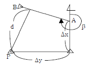
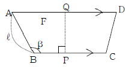
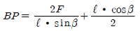
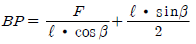
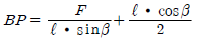
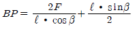
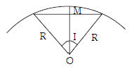
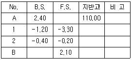

지적기사 (2006-05-14 기출문제)
1과목: 지적측량
1. 좌표면적계산법으로 면적측정을 하는 경우 산출면적은 얼마까지 계산하는가?
- 1/10m2
- 1/100m2
- 1/1000m2
- 1.10000m2
(정답률: 알수없음)

2. 지적삼각측량시 삼각망 구성에 따른 내각의 제한으로 옳은 것은?
- 20° ~ 50°
- 20° ~ 80°
- 30° ~ 120°
- 30° ~ 150°
(정답률: 알수없음)
3. 지적삼각보조점 상호 간을 연결하는 배각법에 의한 지적도근측량에 있어서 1등 도선의 그 변수가 9변일 때 최대 폐색 오차는?
- ±55초
- ±60초
- ±65초
- ±70초
(정답률: 알수없음)
4. 축척 1/1200인 지역에서 측판측량을 시행할 때 도상에 영향을 미치지 않는 지상거리의 한계는?
- 60 ㎜
- 100 ㎜
- 120 ㎜
- 150 ㎜
(정답률: 알수없음)
5. 지적측량 중 기초측량을 3가지로 분류할 때 그 분류로 옳지 않은 것은?
- 지적삼각측량
- 지적삼각보조측량
- 지적도근측량
- 지적사진측량
(정답률: 알수없음)
6. 다음 그림의 점 P에서 방위각이 β 인 직선 AB까지의 수선장 d를 산출하는 식은?

- d=Δx cosβ - Δy sinβ
- d=Δy cosβ - Δx sinβ
- d=Δx sinβ - Δy cosβ
- d=Δy sinβ - Δx cosβ
(정답률: 알수없음)
7. 각 측정과 거리측정의 정도(精度)가 균형을 이루는 것이 바람직하다. 거리측정의 오차가 100m에 ±3㎜라 하면 이것과 같은 정도를 갖기 위한 측각오차는?
- ±8″
- ±6″
- ±4″
- ±3″
(정답률: 알수없음)
8. 지적측량기준점 등이 매설된 토지를 분할하는 경우 그 토지가 작아서 제도하기가 곤란한 경우에는 당해 도면의 여백에 그 축척의 몇 배로 확대하여 제도할 수 있는가?
- 5배
- 10배
- 15배
- 20배
(정답률: 알수없음)
9. 지적삼각보조측량을 교회법으로 시행할 경우 수평각 관측방법으로 옳은 것은?
- 3배각법에 의한다.
- 3대회 방향관측법에 의한다.
- 2대회 방향관측법에 의한다.
- 각 관측법에 의한다.
(정답률: 알수없음)
10. 최소 제곱법에서 다루는 오차는?
- 우연 오차
- 누적 오차
- 착오
- 과실
(정답률: 알수없음)
11. 다음 중 도곽선의 제도에 대한 설명으로 옳지 않은 것은?
- 도면의 윗 방향은 항상 북쪽이 되어야 한다.
- 지적도 도곽 크기는 가로 40센티미터, 세로 30센티미터의 직사각형으로 한다.
- 도곽의 구획은 좌표의 원점을 기준으로하여 정한다.
- 도면에 등록하는 도곽선 수치는 1밀리미터 크기의 아라비아 숫자로 제도한다.
(정답률: 알수없음)
12. 지적삼각측량에서 연직각을 관측할 때에는 정반으로 2회 관측하도록 되어 있는데 이 때 최대치와 최소치의 허용교차는?
- 20초 이내
- 30초 이내
- 40초 이내
- 50초 이내
(정답률: 알수없음)
13. 경위의측량방법에 의한 세부측량의 관측방법에 대한 기준을 설명한 것으로 틀린 것은?
- 미리 각 경계점에 표지를 설치한다.
- 관측은 20초독 이상의 경위의를 사용한다.
- 도선법 또는 방사법에 의한다.
- 연직각의 관측은 교차가 30초 이내인 때 그 평균치를 연직각으로 한다.
(정답률: 알수없음)
14. 그림과 같이 AD∥BC인 사변형 ABCD를 BC에 수직인 직선 PQ로 분할하여 면적이 F인 사변형 ABPQ를 구할 때 BP를 계산하는 식은? (단, AB = ℓ , ∠ABP = β 이다.)





(정답률: 알수없음)
15. 지적측량에 사용할 전파기 또는 광파기의 표준편차는 얼마이상의 것을 사용하여야 하는가?
- ±(5㎜+5ppm)
- ±(5㎝+5ppm)
- ±(0.⑤㎜+50ppm)
- ±(0.⑤㎝+50ppm)
(정답률: 알수없음)
16. 지적도근측량의 종횡선 오차를 배분할 때 방위각법은 어느 방법으로 배부하는가?
- 컴파스 법칙
- 트랜싯 법칙
- 해론의 법칙
- 오사오입 법칙
(정답률: 알수없음)
17. X형 또는 Y형 다각망 도선을 계산하는데 따른 다음 설명 중 잘못된 것은?(단, S는 도선의 거리를 1천으로 나눈 수)
- 도착평균 방위각 계산에서 경중율은 도선별 측점 수의 역수를 사용한다.
- 지적삼각보조측량의 경우 도선별 연결오차는 0.⑤ × S 미터 이하로 제한한다.
- 교점의 평균 종, 횡선좌표 계산에서 경중율은 종, 횡선 차의 역수를 사용한다.
- 도선별 폐색오차는 관측도착 방위각에서 평균도착 방위각을 감하여 구한다.
(정답률: 알수없음)
18. 측판측량을 도선법에 의하여 실시할 경우에 도선변의 수 제한으로 옳은 것은?
- 10변 이하
- 15변 이하
- 20변 이하
- 25변 이하
(정답률: 알수없음)
19. 지적삼각점의 수평각 관측에서 3대회의 방향 관측법에 의한 윤곽도로서 옳은 것은?
- 0° , 90° , 180°
- 0° , 60° , 120°
- 0° , 180° , 270°
- 0° , 30° , 60°
(정답률: 알수없음)
20. 축척이 1/1200의 지적도상의 가로 162.4㎜, 세로 41.2㎜인 사각형 토지의 실제면적은?
- 8,635m2
- 9,635m2
- 10,635m2
- 11,635m2
(정답률: 알수없음)
2과목: 응용측량
21. 초점거리 120㎜, 사진의 크기 23㎝×23㎝, 종중복도 60%, 사진축척 1/30000일 때 기선고도비는?
- 0.67
- 0.77
- 0.87
- 0.97
(정답률: 알수없음)
22. 그림과 같은 단곡선에서 중앙종거 M 은?(단, 반경 R = 100m, I = 30° 30′ 이다.)

- 2.48m
- 3.52m
- 6.94m
- 13.84m
(정답률: 알수없음)
23. 항공사진을 실체 시 할 때 생기는 과고감에 영향을 미치는 인자가 아닌 것은?
- 사진의 화면크기
- 카메라의 초점거리
- 기선고도비
- 입체시 할 경우 눈의 위치
(정답률: 알수없음)
24. 직접수준측량에서 2km를 왕복하는데 오차가 4㎜ 발생하였다면 이와 같은 정밀도로 하여 4.5km를 왕복했을 때의 오차는?
- 5.0㎜
- 5.55㎜
- 6㎜
- 6.⑤㎜
(정답률: 알수없음)
25. 표고 500m의 지표상에 수평거리 1500m를 측정하고 터널을 지표 중심선에 따라 평균표고 200m 되는 지점을 관통시키려고 한다. 터널길이는 얼마인가?(단, 지구곡률 반경은 6370km이다.)
- 1493.00m
- 1499.93m
- 1500.00m
- 1500.07m
(정답률: 50%)
26. 1/50,000 지도상에서 8㎝인 두 점 사이의 실제거리는?
- 2km
- 4km
- 5km
- 10km
(정답률: 알수없음)
27. 축척 1/10,000에서 간곡선 간격은?
- 2.5m
- 1.0m
- 0.5m
- 0.25m
(정답률: 알수없음)
28. 사진기준점 측량의 조정계산방법이 아닌 것은?
- 번들조정법(광속조정법)
- 독립모델조정법
- 다항식법
- 유한요소법
(정답률: 알수없음)
29. 다음 중 GPS측량에서의 의사거리(Pseudo-range)에 대한 설명으로 옳지 않은 것은?
- 인공위성과 지상수신기 사이의 거리 측정값이다.
- 대류권과 이온층의 신호지연으로 인한 오차의 의사거리에 영향력이 없다.
- 기하학적인 실제거리와 달라 의사거리라 부른다.
- 인공위성에서 송신되어 수신기로 도착된 신호의 송신 시간을 PRN 인식 코드로 비교하여 측정한다.
(정답률: 알수없음)
30. 이것의 오차는 다른 점에 영향을 주지 않으며 표고를 관측할 점을 말하는 수준측량 용어로 옳은 것은?
- 기준점
- 측점
- 이점
- 중간점
(정답률: 알수없음)
31. 곡선반경 300m의 단곡선을 시속 80km로 주행할 때, 캔트는 얼마로 해야 하는가?
- 12㎝
- 15㎝
- 18㎝
- 21m
(정답률: 알수없음)
32. 폭 120m의 하천을 횡단하여 정밀하게 수준측량을 실시할 때 가장 좋은 방법은?
- 교호 수준측량에 의해 실시
- 삼각 수준측량에 의해 실시
- 시거측량에 의해 실시
- 양봉의 수면으로부터의 높이로 고저차를 구함
(정답률: 알수없음)
33. 대축척 항공사진상 어떤 피사체의 그림자 길이(L)와 사진촬영 시 태양고도(α)를 알 때 이 피사체의 높이(h)를 구하는 공식은?
- h = L sin α
- h = L cos α
- h = L tan α
- h = L cot α
(정답률: 알수없음)
34. 다음 중 인공위성에 의한 원격탐측의 특성이 아닌 것은?
- 얻어진 영상이 정사투영에 가깝다.
- 판독이 자동적이고 정량화가 가능하다.
- 넓은 지역을 동시에 측정할 수 있다.
- 어떤 지점이든 원하는 시기에 관측할 수 있다.
(정답률: 알수없음)
35. 사진촬영에서 초점거리에 대한 설명으로 옳은 것은?
- 중심 투영점에서 사진면까지 수직거리
- 화면과 기준면과의 거리
- 화면 상호 간의 거리
- 사진면에서 기준면에 이르는 거리
(정답률: 알수없음)
36. 완화곡선의 성질을 설명한 것 중 옳은 것은?
- 완화곡선의 반지름은 종점에서 무한대가 된다.
- 곡선반경은 완화곡선의 시점에서 원곡선의 반지름으로 된다.
- 완화곡선의 접선은 종점에서 직선에 접한다.
- 완화곡선의 종점에 있는 칸트는 원곡선의 칸트와 같게 된다.
(정답률: 알수없음)
37. 노선측량 시 50m의 줄자를 검사한 결과 3.7㎝가 늘어나 있었다. 이 줄자를 사용하여 측정한 읽음 값이 497.6m일 때 정확한 거리는?
- 497.23m
- 497.89m
- 497.92m
- 497.97m
(정답률: 알수없음)
38. GPS 시스템 오차의 종류가 아닌 것은?
- 위성 시계 오차
- 대류권 굴절 오차
- 위성 궤도 오차
- 영상 표정 오차
(정답률: 알수없음)
39. 등고선의 간격을 결정할 때 고려하여야 하는 사항으로 가장 거리가 먼 것은?
- 축척
- 지형의 상태
- 측량거리
- 측량목적
(정답률: 알수없음)
40. 갱내에서의 수준측량 결과가 다음과 같을 때 B점의 지반고는? (단, 단위는 m임)

- 112.20m
- 114.70m
- 115.70m
- 116.20m
(정답률: 알수없음)
3과목: 토지정보체계론
41. 토지정보시스템의 구축효과에 해당하지 않는 것은?
- 고용증대
- 정보의 공유화
- 업무의 신속화
- 원활한 의사결정의 지원
(정답률: 알수없음)
42. 다음 중 벡터자료 구조화 방식의 하나인 스파게티(spaghetti) 구조에 대한 설명이 잘못된 것은?
- 점, 선, 다각형 등의 객체들이 구조화되지 않은 그래픽 형태이다.
- 인접하고 있는 다각형을 나타내기 위하여 경계하는 선은 두 번씩 저장된다.
- 객체들 간의 공간관계가 설정되지 않아 공간분석에 비효율적이다.
- 자료구조가 복잡하지만 선형 분석, 면형 분석 등을 할수 있다.
(정답률: 알수없음)
43. PBLIS와 LMIS를 통합한 시스템을 무엇이라 하는가?
- KLIS
- UIS
- GSIS
- PLIS
(정답률: 알수없음)
44. 토지정보시스템의 속성정보에 관한 사항 중 옳지 않은 것은?
- 대상물의 성격이나 정보를 기술한 사항이다.
- 제공되는 정보는 문자형태로 나타난다.
- 지적에 있어서 속성정보는 토지소재, 지번, 지목 등이 있다.
- 좌표체계를 기준으로 지형지물의 위치와 모양을 나타낸다.
(정답률: 알수없음)
45. 지적 전산처리규정의 고유번호 구성에서 대장구분, 본번과 부번의 행정구역 코드의 구성은?
- 대장구분 1자리, 본번 4자리, 부번 4자리
- 대장구분 1자리, 본번 3자리, 부번 3자리
- 대장구분 2자리, 본번 3자리, 부번 4자리
- 대장구분 2자리, 본번 4자리, 부번 3자리
(정답률: 알수없음)
46. PBLIS의 DB 오류자료 정비방안으로 옳지 않은 것은?
- 누락 필지 오류정비 - 분할 및 합병정리 누락 여부를 확인하여 토지이동정리 실시
- 지번 중복 오류정비 - 분할등록 구분코드인 'a'코드 누락 여부 확인 후 정비
- 지목 상이 오류정비 - 지목 일괄수정기능을 이용하여 대장 DB의 지목을 도면 DB의 지목을 기준으로 일괄 변환
- 면적 공차초과 오류정비 - 면적측정기로 지적도상 면적을 측정하여 원인 분석 후 면적 정정
(정답률: 알수없음)
47. 데이터에 대한 정보로서 데이터의 내용, 품질, 조건 및 기타 특성에 대한 정보를 포함하는 정보의 이력서라 할 수 있는 것은?
- 데이터베이스(Database)
- 라이브러리(Library)
- 메타데이터(MetaData)
- 인덱스(Index)
(정답률: 알수없음)
48. 다음 중 지적측량 성과작성 시스템의 목적으로 가장 거리가 먼 것은?
- 지적측량성과의 적부심사 기준 설립
- 수작업에 의한 오류방지
- 신속하고 정확한 지적측량성과 제공
- 측량준비도 등의 작성의 자동화
(정답률: 알수없음)
49. 지적 재조사사업으로 기대되는 효과로 옳지 않은 것은?
- 지적불부합지 문제 해소
- 토지의 경계복원력 향상
- 도형DB와 대장DB의 이원화
- 능률적인 지적관리체제로 개선
(정답률: 알수없음)
50. 다음 중 좌표가 입력되어야 할 곳에 못 미치게 입력되어 폴리곤이 폐합되지 않게 만드는 오류에 해당하는 것은?
- 오버슈트(overshoot)
- 언더슈트(undershoot)
- 슬리버(sliver)
- 스파이크(spike)
(정답률: 알수없음)
51. 다음 중 PBLIS의 개발 목적으로 타당하지 않은 것은?
- 지적 재조사 기반확보
- 토지관련 서비스 제공
- 행정의 능률성 제고
- 지적 및 측지 관련 정보의 통합
(정답률: 알수없음)
52. 지형공간정보체계의 정보 중 특성정보에 해당하지 않는 것은?
- 위치정보
- 도형정보
- 영상정보
- 속성정보
(정답률: 알수없음)
53. 공간의 관계를 정의하는데 쓰이는 수학적 방법으로서 입력된 자료의 위치를 좌표 값으로 인식하고 각각의 자료 간의 정보를 상대적 위치로 저장하며, 선의 방향, 특성 간의 관계, 연결성, 인접성 등을 정의하는 것을 무엇이라 하는가?
- 위상관계
- 위치관계
- 위치정보
- 속성정보
(정답률: 알수없음)
54. 다음은 벡터구조와 격자구조를 비교한 것이다. 설명으로 옳지 않은 것은?
- 벡터구조는 격자구조에 비해 자료의 양이 적다.
- 격자구조는 정확도가 높고 위상관계를 가지고 있어 공간분석이 가능하다.
- 벡터구조는 자료구조가 복잡하다.
- 격자구조는 중첩 분석이나 모델링이 용이하다.
(정답률: 알수없음)
55. 종이형태의 지적도면을 수동독취기(Digitizer)를 이용하여 입력할 경우 자료 형태는 무엇인가?
- 메쉬(Mesh) 자료 형태
- 벡터(Vector) 자료 형태
- 셀(Cell) 자료 형태
- 래스터(Raster) 자료 형태
(정답률: 알수없음)
56. 다음 중 위상자료구조를 만드는 과정에 해당하는 것은?
- 디지타이징
- 스캐닝
- 정위치편집
- 구조화편집
(정답률: 알수없음)
57. 다음 중 1차원 표현의 내용이 아닌 것은?
- 선(Line)
- 면적(Area)
- 문자열(String)
- 사슬(Chain)
(정답률: 알수없음)
58. 다음은 공간자료교환의 표준화(SDTS : Spatial Data Transfer Standard)에 대한 설명이다. 틀린 것은?
- SDTS는 NGIS의 데이터 교환 표준화로 제정되었다.
- SDTS는 지리공간정보에 관한 용어를 서로 전달하는 언어이다.
- SDTS는 데이터의 품질에 대한 정보를 의미한다.
- SDTS는 공간자료의 위상구조 정보를 고려한다.
(정답률: 알수없음)
59. 항공사진, 위성사진 및 기타 이미 제작된 지도 등으로부터 지상물에 대한 위치정보를 수치로 입력, 편집하고 데이터를 구성하여 여러 가지 형태의 지도를 만드는 컴퓨터지도 제작시스템의 약자로 맞는 것은?
- CAD
- CAM
- CMS
- FM
(정답률: 알수없음)
60. 도형자료의 입력 방법에 대한 설명으로 틀린 것은?
- 도형자료 입력은 수치형태의 자료 입력과 도면형태의 자료 입력이 있다.
- 수치형태의 자료입력 방법은 키보드에 의한 방법으로 한다.
- 항공사진에 의한 도면자료 입력은 디지타이저를 이용한다.
- 스캐너에 의한 방법은 별도의 자료변환장치를 필요로 한다.
(정답률: 알수없음)
4과목: 지적학
61. 지적제도에서 1필지의 설정 측면과 관련이 없는 것은?
- 1필지에 대한 권리적 현황에 관한 사항
- 1필지에 대한 물리적 현황에 관한 사항
- 1필지에 대한 가치적 현황에 관한 사항
- 1필지에 대한 이용규제적 현황에 관한 사항
(정답률: 알수없음)
62. 토지의 분할은 다음 어느 것에 속하는가?
- 형질변경
- 등록전환
- 행정처분
- 사법처분
(정답률: 알수없음)
63. 토지조사 당시 지권(地券)을 발행한 이유로 가장 적합한 것은?
- 토지소유의 보호
- 토지거래 문란의 방지
- 토지등급의 설정
- 관의 공적소유권 보장
(정답률: 알수없음)
64. 우리나라에서 사용하고 있는 지목의 분류방식은?
- 지형지목
- 용도지목
- 토성지목
- 단식지목
(정답률: 알수없음)
65. 지목 중 전과 답의 결정은 무엇을 기준으로 하는가?
- 주변 지형
- 경작방법
- 작물의 이용가치
- 경작위치, 방향
(정답률: 알수없음)
66. “모든 토지는 지적공부에 등록해야 하고 등록 전 토지 표시사항은 항상 실제와 일치하게 유지해야 한다.”가 의미하는 지적제도의 등록형식은?
- 적극적 등록주의
- 소극적 등록주의
- 실질적 심사주의
- 당사자 신청주의
(정답률: 알수없음)
67. 토지조사사업 시에 소유자에 관하여는 사정(査定)을 하였는데 이 때 사정(査定)의 뜻으로 볼 수 있는 것은?
- 원래의 소유권을 재확인
- 원래의 소유권을 공증
- 원래의 소유권과 무주토지 소유권을 확정
- 원래의 소유권은 소멸하고 새로이 소유권 취득
(정답률: 알수없음)
68. 다목적 지적제도를 구축하는 이유로 거리가 먼 것은?
- 정확한 토지 과세정보의 획득
- 토지소유현황 파악 용이
- 중복업무 방지로 인한 국가 토지행정의 효율서 증대
- 토지 공개념 도입 용이
(정답률: 알수없음)
69. 지적 국정주의의 설명으로 적합하지 않는 것은?
- 지번, 지목, 경계, 좌표, 면적 등은 국가만이 결정할 수 있다.
- 토지의 형질변경은 국가에 신청함으로 만이 가능하다.
- 소관청은 국가행정기관의 장으로서 시장, 군수, 구청장이다.
- 민유 토지의 등록도 국가가 한다.
(정답률: 알수없음)
70. 토지를 중심으로 정보를 등록하는 방법은?
- 물적편성주의
- 인적편성주의
- 물적ㆍ 인적편성주의
- 연대적 편성주의
(정답률: 알수없음)
71. 오늘날의 지적(地籍)과 유사한 기록이 아닌 것은?
- 백제시대의 도적(圖籍)
- 신라시대의 장적(帳籍)
- 고려시대의 전적(田籍)
- 조선시대의 호적(戶籍)
(정답률: 알수없음)
72. 조선시대의 양안(量案)은 오늘날의 어느 것과 같은 성질의 것인가?
- 토지과세대장
- 임야대장
- 토지대장
- 부동산등기부
(정답률: 알수없음)
73. 조선시대의 문기(文記)에 관한 설명으로 옳지 않은 것은?
- 현재의 부동산 매매계약서와 같은 것이다.
- 3부 작성하여 매수인, 집필인, 관에 비치하였다.
- 문기는 입안청구 시는 물론 소송의 유일한 증거다.
- 상속, 증여, 임대차의 경우는 작성하지 않았다.
(정답률: 알수없음)
74. 조선시대 내수사와 왕실의 일부 또는 왕실의 경비를 충당하기 위한 토지는?
- 역토
- 궁장토
- 둔토
- 마토
(정답률: 알수없음)
75. 다음 중 경계의 설명이 틀린 것은?
- 지적공부에 등록된 1필지의 구획선이다.
- 지적도나 임야도에 등록된 선이다.
- 경계점좌표등록부에 등록된 좌표의 연결이다.
- 경계는 축척에 따라 그 폭이 다르다.
(정답률: 알수없음)
76. 토지등록의 법적 지위에 있어서 토지의 이동은 반드시 외부에 알려야 한다는 일반원칙은?
- 신고의 원칙
- 공신의 원칙
- 공시의 원칙
- 형식의 원칙
(정답률: 알수없음)
77. 토지 등록의 목적과 관계가 가장 적은 것은?
- 토지의 현황 파악
- 토지의 수량 조사
- 토지의 권리 상태 공시
- 토지의 과실 기록
(정답률: 알수없음)
78. 토지정보 중 토지표시사항의 특성으로 가장 관련이 적은 것은?
- 단순성
- 정확성
- 통일성
- 다양성
(정답률: 알수없음)
79. 토지의 특정성(特定性)을 살리어 다른 토지와 분명히 구별하기 위한 토지표시 방법은?
- 지목을 구분하는 것
- 지번을 붙이는 것
- 면적을 정하는 것
- 토지의 등급을 정하는 것
(정답률: 알수없음)
80. 토지정보시스템(LIS)은 다음 중 어느 지적에 해당하는가?
- 과세지적
- 법지적
- 다목적지적
- 경계지적
(정답률: 알수없음)
5과목: 지적관계법규
81. 임야대장에 등록된 임야를 개간하여 뽕밭으로 만드는 경우에는 어떤 종류의 토지이동 처리를 해야 하나?
- 등록전환
- 지목변경
- 토지분할
- 합병
(정답률: 알수없음)
82. 토지의 거래계약허가구역 안에서 토지거래계약의 허가를 요하지 않는 토지의 면적으로 잘못된 것은?
- 주거지역에서는 180m2 이하
- 상업지역에서는 200m2 이하
- 공업지역에서는 660m2 이하
- 도시지역 외의 지역에서는 600m2 이하
(정답률: 알수없음)
83. 다음 중 지적공부의 복구자료에 해당되지 않는 것은?
- 측량준비도
- 지적공부등본
- 토지이동정리결의서
- 법원의 확정판결서 사본
(정답률: 알수없음)
84. 부동산등기법상 등기할 수 있는 권리에 해당하지 않는 것은?
- 소유권
- 저당권
- 지상권
- 점유권
(정답률: 알수없음)
85. 고속도로 안의 휴게소 부지의 지목으로 가장 타당한 것은?
- 도로
- 공원
- 대
- 휴게소
(정답률: 알수없음)
86. 소관청이 관할등기소에 토지표시의 변경에 관한 등기를 촉탁하지 않아도 되는 토지 이동은?
- 신규등록
- 축척변경
- 분할
- 합병
(정답률: 알수없음)
87. 지적기술자의 징계에 관한 설명 중 틀린 것은?
- 지적기술자의 징계는 중앙지적위원회에서 의결하고 그 결과에 따라 행정자치부장관이 징계처분을 행한다.
- 중앙지적위원회는 행정자치부장관이 회부한 징계 사안에 대하여 회부받은 그날로부터 3개월 이내에 이를 심의ㆍ 의결하여야 한다.
- 행정자치부장관은 시ㆍ 도지사, 소관청, 대한지적공사의 징계 요구가 있는 때에는 이를 검토하여 30일 이내에 중앙지적위원회에 회부하여야 한다.
- 징계는 자격취소, 1월 이상 3년 이하의 자격정지로 한다.
(정답률: 알수없음)
88. 국토의 계획 및 이용에 관한 법률상 시설보호지구를 지정하여 보호하는 시설로서 가장 거리가 먼 것은?
- 학교
- 항만
- 공항
- 문화재
(정답률: 알수없음)
89. 다음 중 시ㆍ 도지사의 승인사항이 아닌 것은?
- 도면의 재작성 승인
- 지목변경 승인
- 지적공부 반출 승인
- 지번변경 승인
(정답률: 알수없음)
90. 다음 중 도시관리계획에 해당하는 것은?
- 기반시설의 설치ㆍ 정비 또는 개량에 관한 계획
- 관할구역의 기본적인 공간구조와 장기발전방향을 제시하는 종합계획
- 광역계획권으로 지정하여 수립하는 계획
- 2 이상의 특별시ㆍ 광역시ㆍ 시 또는 군의 공간구조 및 기능을 상호 연계
(정답률: 알수없음)
91. 지적측량업의 등록증을 다른 사람에게 빌려준 자와 그 상대방은 어떠한 벌칙에 처하는가?
- 5년 이하의 징역 또는 5천 만 원 이하의 벌금
- 3년 이하의 징역 또는 3천 만 원 이하의 벌금
- 2년 이하의 징역 또는 2천 만 원 이하의 벌금
- 1년 이하의 징역 또는 5백 만 원 이하의 벌금
(정답률: 알수없음)
92. 소관청이 직권으로 지적공부에 등록된 사항을 정정할 수 있는 경우가 아닌 것은?
- 토지이동 정리 결의서의 내용과 다르게 정리된 경우
- 지적측량성과와 다르게 정리된 경우
- 도면에 등록된 필지가 면적증감이 있고 경계위치가 잘못 등록된 경우
- 지적공부의 등록사항이 잘못 입력된 경우
(정답률: 알수없음)
93. 다음 중 지적공부의 복구 사유에 해당되는 것은?
- 축척변경을 한 때
- 지목변경을 한 때
- 도시계획사업을 완료한 때
- 지적공부의 전부 또는 일부가 멸실ㆍ 훼손된 때
(정답률: 알수없음)
94. 소유권의 보존 또는 이전의 등기를 신청하는 경우 제출이 요구되는 것은?
- 인감증명서
- 신청서 부본, 보증서
- 등기필증
- 신청인의 주소를 증명하는 서면
(정답률: 알수없음)
95. 지적측량적부심사의결서를 통지받은 자가 지방지적위원회의 의결에 불복하는 때에는 의결서를 송부받은 날로부터 몇 일 이내에 중앙지적위원회에 재심사를 청구할 수 있는가?
- 120일 이내
- 150일 이내
- 180일 이내
- 90일 이내
(정답률: 알수없음)
96. 축척변경에 따른 청산관계의 설명 중 옳은 것은?
- 청산금은 필지별 면적에 제곱미터당 가격을 곱하여 정한다.
- 소관청은 수령통지일로부터 3월 이내에 청산금을 지급하여야 한다.
- 청산금의 부족액은 당해 지방자치단체가 부담한다.
- 청산금에 이의가 있는 자는 15일 이내에 소관청에 이의신청을 하여야 한다.
(정답률: 알수없음)
97. 토지소유자가 해야 할 신청을 대위할 수 없는 자는?
- 학교용지, 도로, 수도용지 등의 지목으로 될 토지는 그 사업시행자
- 지방자치단체가 취득하는 토지의 경우에는 그 토지를 관리하는 지방자치단체의 장
- 채권을 보전하기 위한 채권자
- 토지점유자
(정답률: 알수없음)
98. 지적법의 목적으로 옳지 않은 것은?
- 합리적이고 효율적인 토지관리 도모
- 소유권의 보호에 기여
- 토지관련 정보의 조사ㆍ 측량에 관한 규정
- 토지의 개발ㆍ 정비ㆍ 보전에 관한 규정
(정답률: 알수없음)
99. 토지의 분할, 멸실, 면적의 증감 또는 지목의 변경이 있는 때 그 토지의 소유권의 등기명의인은 얼마의 기간 이내에 그 등기를 신청하여야 하는가?
- 14일 이내
- 15일 이내
- 1월 이내
- 3월 이내
(정답률: 알수없음)
100. 지적법상 1필지로 정할 수 있는 기준에 해당하지 않는 것은?
- 지번부여지역 안의 토지로서 소유자가 동일
- 지번이 연속된 토지
- 동일한 지적측량방법에 의한 토지
- 지번부여지역 안의 토지로서 용도가 동일
(정답률: 알수없음)